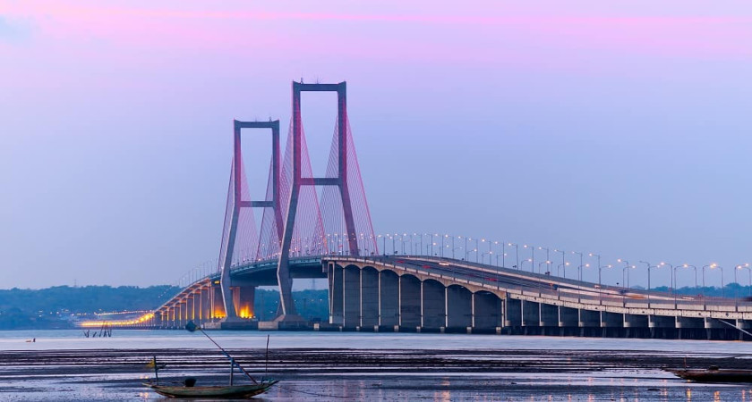
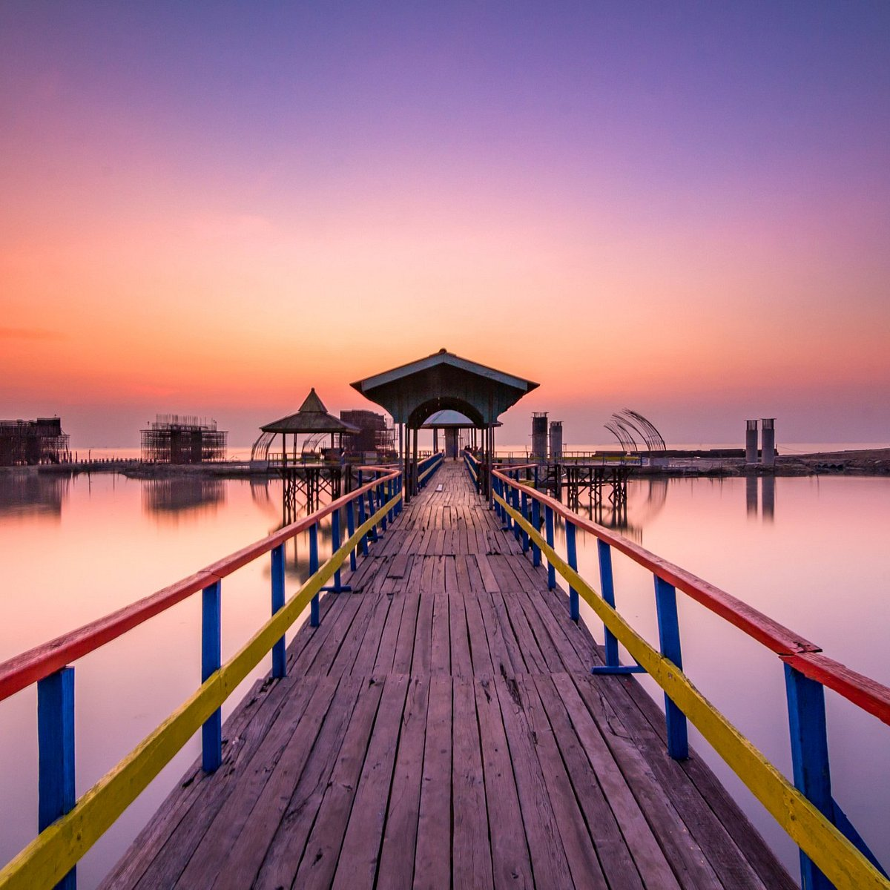

Sejarah

Surabaya merupakan kota terbesar kedua di Indonesia setelah Jakarta.
Kota ini terletak di Provinsi Jawa Timur, tepatnya di pesisir Laut
Jawa. Sejarah Surabaya dimulai sejak abad ke-13, ketika wilayah
tersebut masih merupakan bagian dari Kerajaan Majapahit. Pada masa
itu, Surabaya dikenal sebagai pelabuhan penting yang menghubungkan
Majapahit dengan dunia luar.
Pada abad ke-17, Surabaya dikuasai oleh Belanda. Belanda membangun
kota Surabaya menjadi pusat perdagangan dan pemerintahan di Jawa
Timur. Pada masa penjajahan Belanda, Surabaya juga menjadi saksi bisu
perjuangan rakyat Indonesia melawan penjajah. Pertempuran Surabaya
pada 10 November 1945 merupakan salah satu pertempuran terbesar dalam
sejarah kemerdekaan Indonesia.
Geografis

Secara geografis, Surabaya terletak pada 7°9′- 7°21′ Lintang Selatan
dan 112° 36′ – 112° 54′ Bujur Timur. Kota ini berbatasan dengan
Selat Madura di utara dan timur, Kabupaten Sidoarjo di selatan, dan
Kabupaten Gresik di barat. Surabaya memiliki luas wilayah 33.306,30
hektare. Sebagian besar wilayahnya berupa dataran rendah dengan
ketinggian antara 3-6 meter di atas permukaan laut. Di bagian selatan
terdapat dua bukit landai dengan ketinggian 25-50 meter di atas
permukaan laut.
Letak Surabaya yang strategis menjadikan kota ini sebagai penghubung
antara Pulau Jawa dan Pulau Madura. Surabaya juga merupakan salah
satu pelabuhan tersibuk di Indonesia. Selain itu, Surabaya juga
memiliki jaringan transportasi yang baik, baik darat, laut, maupun
udara.
Wisata
Seiring perkembangan zaman, Surabaya tumbuh menjadi kota modern yang
menawarkan berbagai macam destinasi wisata. Mulai dari wisata
sejarah, wisata alam, hingga wisata kuliner, semuanya bisa Anda
temukan di Surabaya.
Tugu Pahlawan

Tugu Pahlawan memiliki tinggi 45 meter, yang melambangkan tahun
1945, tahun Indonesia merdeka. Monumen ini berbentuk paku terbalik
yang dilapisi dengan tembaga. Di puncak tugu terdapat patung sosok
perempuan yang memegang bambu runcing dan kain merah putih.
Patung ini melambangkan semangat perjuangan rakyat Indonesia.
Kenjeran

Kenjeran merupakan salah satu destinasi wisata keluarga yang paling
populer di Surabaya. Pantai ini terletak di Kecamatan Kenjeran,
Surabaya, tepatnya di pesisir Laut Jawa. Kenjeran menawarkan
berbagai macam wahana permainan dan hiburan yang cocok untuk segala
usia. Kenjeran dapat diakses dengan kendaraan pribadi maupun umum.
Jika Anda menggunakan kendaraan pribadi, Anda dapat mengambil
rute menuju Jalan Kenjeran. Jika Anda menggunakan kendaraan umum,
Anda dapat naik bus Trans Semanggi jurusan Kenjeran.